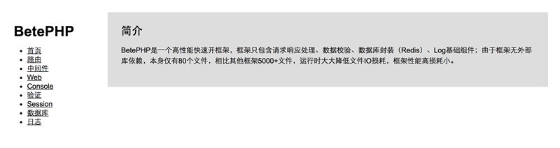

安装
环境要求
- PHP >= 5.4.0
- PDO扩展
- OpenSSL扩展
- MbString扩展
安装
下载release包安装
打开下面其中一个release包下载页面，选择最新release版本包下载，解压下载的压缩包：
http://git.oschina.net/betephp/betephp/releases
https://github.com/betephp/betephp-release/releases
使用composer安装
composer create-project --prefer-dist betephp/betephp myproject
进入项目根目录（下文未特殊注明，目录起始位置均为此根目录）
cd betephp(myproject) #进入项目根目录
配置
建立app.ini配置文件
复制app.ini.example为app.ini，修改app.ini环境变量、数据库连接等适配当前环境；
cd config
cp app.ini.example app.ini
修改runtime文件夹权限
chmod -R 777 runtime/
运行
使用PHP内置Server启动App
cd public
php -S yourhost:9090
验证
在浏览器打开http://yourhost:9090，验证页面是否出现下图。

Web服务器配置
通常PHP是与Nignx、Apache一起运行。
Nginx配置
将Nginx的root设置为public目录，在nginx配置添加如下配置：
server {
location / {
try_files $uri $uri/ /index.php?$query_string;
}
}
Apache配置
将Apache的DocumentRoot设置为项目的public目录，同时确保Apache开启了mod_rewrite。